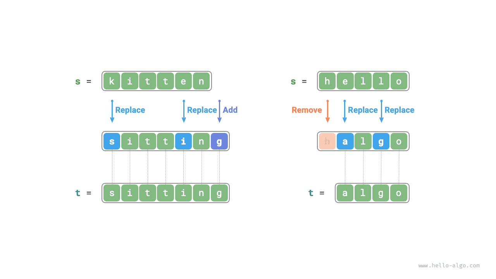
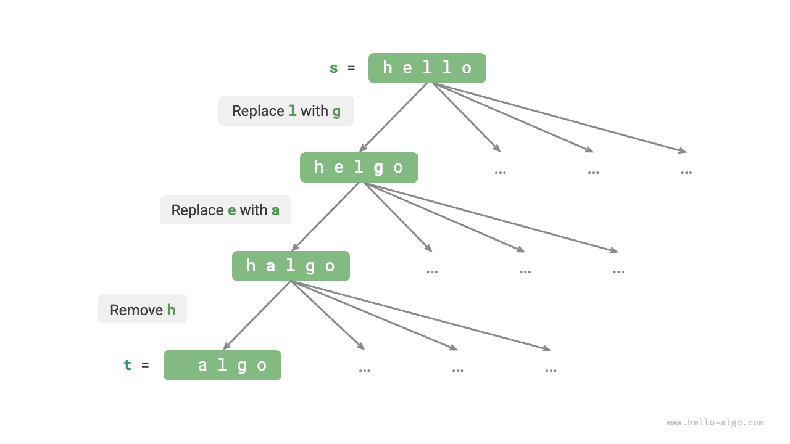
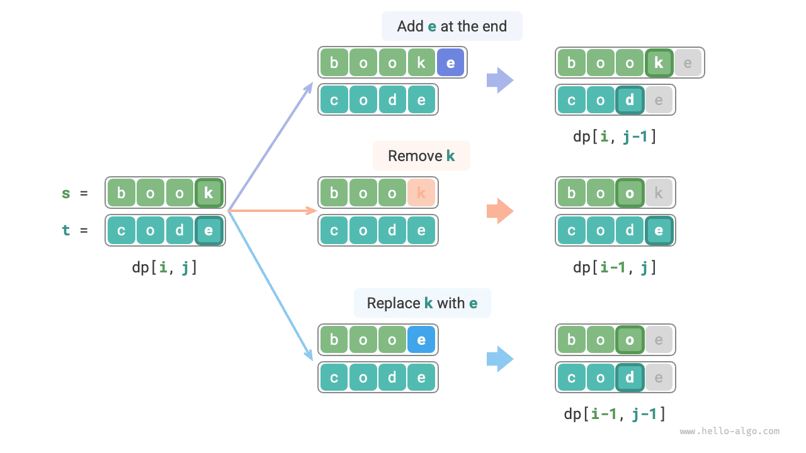

البرمجة الديناميكية
مشكلة مسافة التحرير
تشير مسافة التحرير (Edit distance)، وتُعرف أيضاً بمسافة ليفنشتاين (Levenshtein distance)، إلى أقل عدد من التحريرات اللازمة لتحويل سلسلة نصية إلى أخرى، وتُستخدم عادةً في استرجاع المعلومات ومعالجة اللغة الطبيعية لقياس التشابه بين متتابعتين.
بمعطى سلسلتين نصيتين $s$ و$t$، أعد أقل عدد من التحريرات اللازمة لتحويل $s$ إلى $t$.
ويمكنك إجراء ثلاثة أنواع من عمليات التحرير على السلسلة النصية: إدراج محرف، أو حذف محرف، أو استبدال محرف بأي محرف آخر.
كما يوضح الشكل أدناه، يتطلب تحويل kitten إلى sitting ثلاث تحريرات، تشمل استبدالين وإدراجاً واحداً؛ بينما يتطلب تحويل hello إلى algo ثلاث خطوات، تشمل استبدالين وحذفاً واحداً.

يمكن تفسير مشكلة مسافة التحرير تفسيراً طبيعياً باستخدام نموذج شجرة القرار. فالسلاسل النصية تقابل عقد الشجرة، وكل عملية تحرير تقابل ضلعاً في الشجرة.
وكما يوضح الشكل أدناه، فمن دون تقييد العمليات، يمكن أن تتفرع كل عقدة إلى أضلاع كثيرة، ويقابل كل ضلع عملية واحدة، مما يعني وجود مسارات كثيرة محتملة لتحويل hello إلى algo.
ومن منظور شجرة القرار، يهدف هذا السؤال إلى إيجاد أقصر مسار بين العقدة hello والعقدة algo.

منهج البرمجة الديناميكية
الخطوة 1: فكّر في القرارات في كل جولة، وحدد الحالة، وبذلك تحصل على جدول $dp$
تتضمن كل جولة قرار إجراء عملية تحرير واحدة على السلسلة النصية $s$.
نريد أن يتقلص حجم المسألة تدريجياً أثناء عملية التحرير حتى نتمكن من بناء مسائل فرعية. ولتكن أطوال السلسلتين $s$ و$t$ هما $n$ و$m$ على الترتيب. ننظر أولاً في المحرفين الأخيرين في السلسلتين، $s[n-1]$ و$t[m-1]$.
- إذا كان $s[n-1]$ و$t[m-1]$ متماثلين، فيمكننا تجاوزهما والنظر مباشرةً في $s[n-2]$ و$t[m-2]$.
- وإذا كان $s[n-1]$ و$t[m-1]$ مختلفين، فنحتاج إلى إجراء تحرير واحد على $s$ (إدراج أو حذف أو استبدال) لجعل المحرفين الأخيرين في السلسلتين متماثلين، مما يتيح تجاوزهما والنظر في مسألة أصغر حجماً.
بعبارة أخرى، كل جولة قرار (عملية تحرير) نجريها على السلسلة النصية $s$ ستغيّر المحارف المتبقية الواجب مطابقتها في $s$ و$t$. لذلك تكون الحالة هي المحرفين رقم $i$ ورقم $j$ اللذين ننظر فيهما حالياً في $s$ و$t$، ويُرمز إليها بـ$[i, j]$.
تقابل الحالة $[i, j]$ المسألة الفرعية: أقل عدد من التحريرات اللازمة لتحويل أول $i$ محرفاً من $s$ إلى أول $j$ محرفاً من $t$.
ومن ذلك نحصل على جدول $dp$ ثنائي الأبعاد حجمه $(n+1) \times (m+1)$.
الخطوة 2: حدد البنية الفرعية المثلى، ثم استنتج معادلة انتقال الحالة
لننظر في المسألة الفرعية $dp[i, j]$، حيث المحرفان الأخيران في السلسلتين المقابلتين هما $s[i-1]$ و$t[j-1]$، ويمكن تقسيمها إلى الحالات الثلاث الموضحة في الشكل أدناه بحسب اختلاف عمليات التحرير.
- إدراج $t[j-1]$ بعد $s[i-1]$، فتكون المسألة الفرعية المتبقية $dp[i, j-1]$.
- حذف $s[i-1]$، فتكون المسألة الفرعية المتبقية $dp[i-1, j]$.
- استبدال $s[i-1]$ بـ$t[j-1]$، فتكون المسألة الفرعية المتبقية $dp[i-1, j-1]$.

واستناداً إلى التحليل أعلاه، نحصل على البنية الفرعية المثلى: أقل عدد من التحريرات لـ$dp[i, j]$ يساوي الحد الأدنى بين $dp[i, j-1]$ و$dp[i-1, j]$ و$dp[i-1, j-1]$ مضافاً إليه تكلفة التحرير الحالية $1$. ومعادلة انتقال الحالة المقابلة هي:
$$ dp[i, j] = \min(dp[i, j-1], dp[i-1, j], dp[i-1, j-1]) + 1 $$
يُرجى ملاحظة أنه عندما يكون $s[i-1]$ و$t[j-1]$ متماثلين، لا حاجة إلى أي تحرير للمحرف الحالي، وعندئذٍ تكون معادلة انتقال الحالة:
$$ dp[i, j] = dp[i-1, j-1] $$
الخطوة 3: حدد الشروط الحدية وترتيب انتقال الحالة
عندما تكون كلتا السلسلتين فارغتين، يكون عدد خطوات التحرير $0$، أي $dp[0, 0] = 0$. وعندما تكون $s$ فارغة و$t$ غير فارغة، يساوي أقل عدد من خطوات التحرير طول $t$، أي الصف الأول $dp[0, j] = j$. وعندما تكون $s$ غير فارغة و$t$ فارغة، يساوي أقل عدد من خطوات التحرير طول $s$، أي العمود الأول $dp[i, 0] = i$.
وبمراقبة معادلة انتقال الحالة، يعتمد الحل $dp[i, j]$ على الحلول الموجودة على اليسار وفوق وعلى أعلى اليسار، لذا يمكن اجتياز جدول $dp$ كاملاً بالترتيب عبر حلقتين متداخلتين.
تنفيذ الشيفرة
كما يوضح الشكل أدناه، تشبه عملية انتقال الحالة في مشكلة مسافة التحرير نظيرتها في مشكلة الحقيبة إلى حد كبير؛ إذ يمكن النظر إلى كلتيهما على أنها عملية ملء شبكة ثنائية الأبعاد.
تحسين المساحة
بما أن $dp[i, j]$ تعتمد على الحالة أعلاه $dp[i-1, j]$، وعلى الحالة على اليسار $dp[i, j-1]$، وعلى الحالة في أعلى اليسار $dp[i-1, j-1]$، فإن الاجتياز الأمامي سيفقد حالة أعلى اليسار $dp[i-1, j-1]$، بينما لا يستطيع الاجتياز العكسي بناء $dp[i, j-1]$ مسبقاً، لذا لا يصلح أي من ترتيبي الاجتياز.
ولهذا السبب، يمكننا استخدام متغيّر leftup لتخزين الحل في أعلى اليسار $dp[i-1, j-1]$ مؤقتاً، بحيث لا يبقى علينا سوى النظر في الحلين على اليسار وفوق. وهذه الحالة مماثلة لما في مشكلة الحقيبة غير المحدودة، لذا يمكننا استخدام الاجتياز الأمامي. والشيفرة كما يلي: